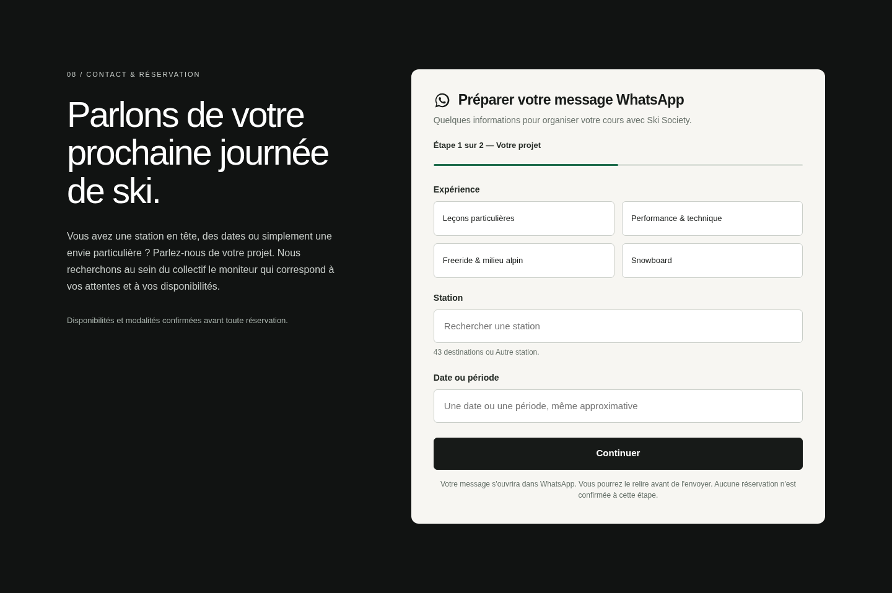
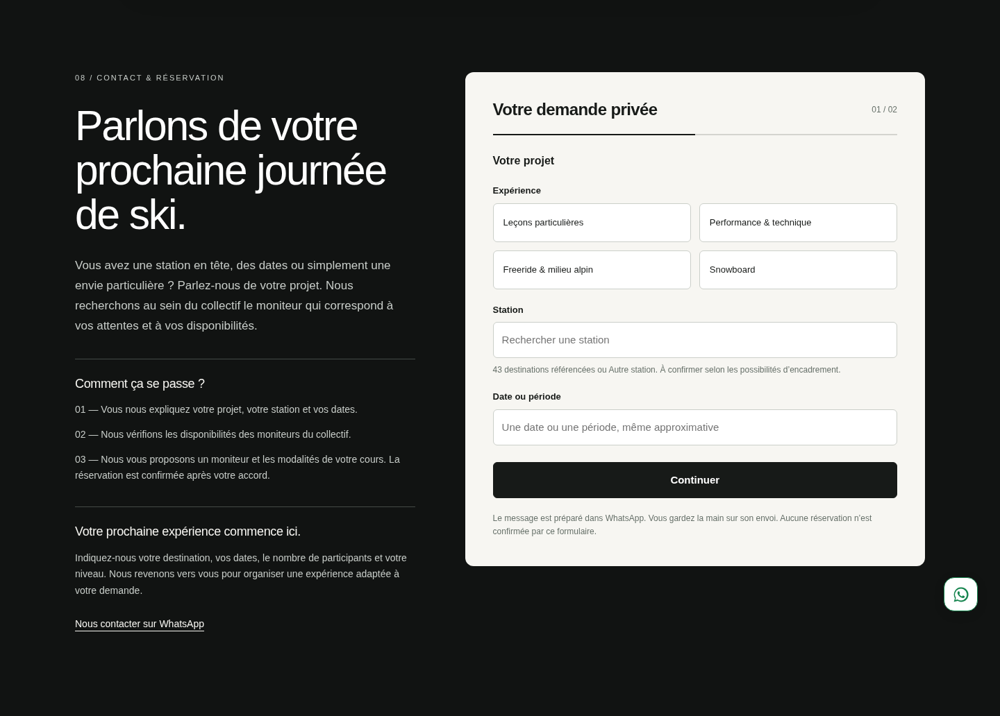
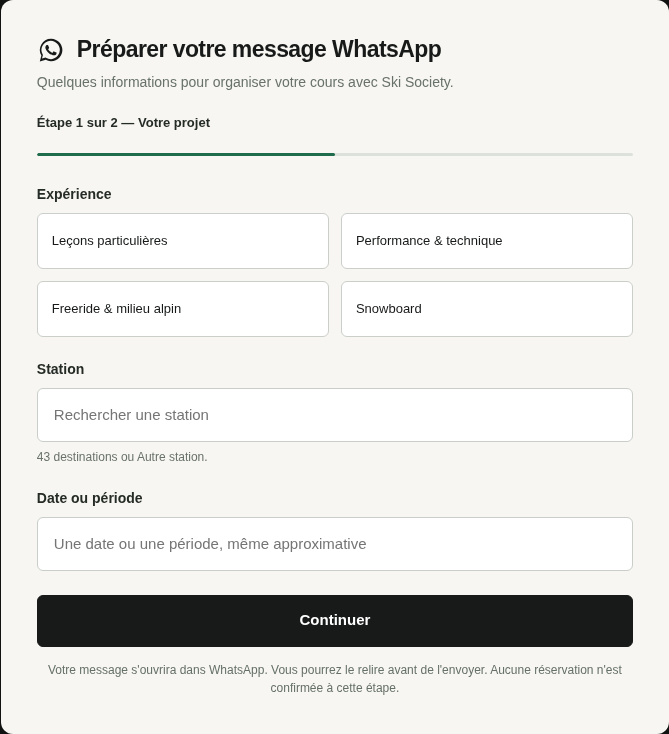
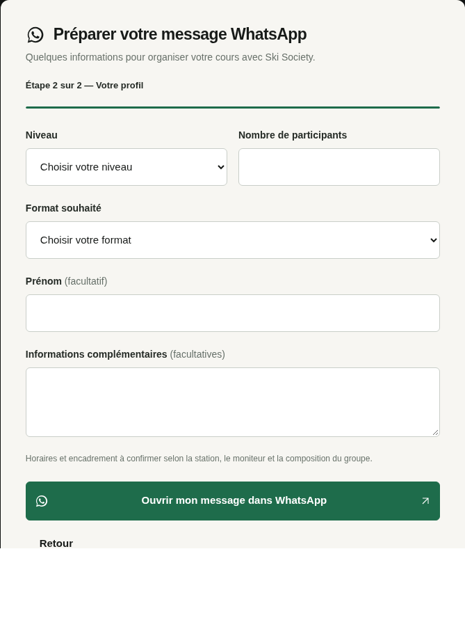
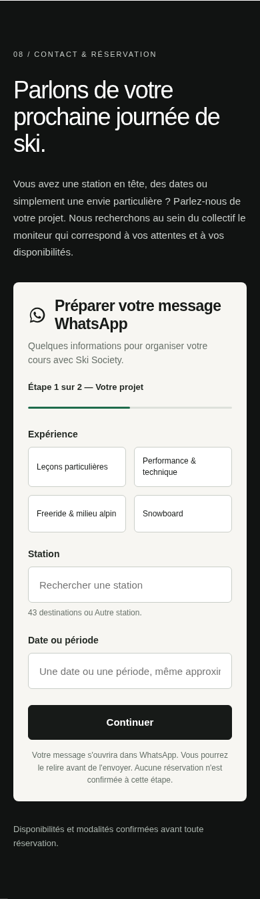
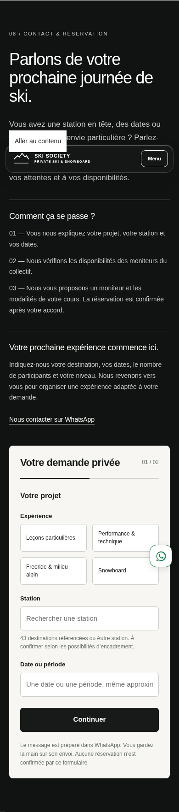
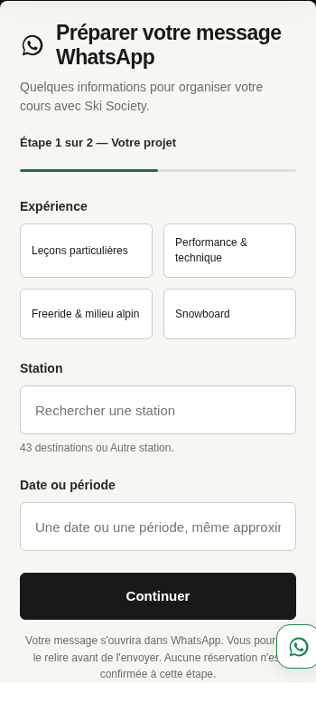
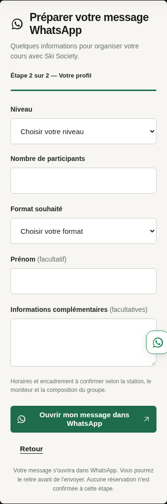

Réservation V3 — état pour revue
Validation photographique BLOQUÉE. Le proxy refuse les images. Les fondus photographiques restent masqués tant qu’une vraie photo n’est pas chargée. Ces captures montrent la réservation refondue et le mode de repli à fonds unis ; elles ne prouvent pas les transitions immersives demandées. Blocage et points restant à contrôler.
Réservation complète — 1440 px


Deux étapes — 1440 px


Réservation complète — 390 px


Deux étapes — 390 px


Page complète — mode de repli actuel
Emplacements des transitions — photos indisponibles
A — Formats / Destinations


B — Destinations / Avis


C — FAQ / Réservation


Tests et liste des éléments retirés de l’affichage · Résultats JSON · Fichiers modifiés